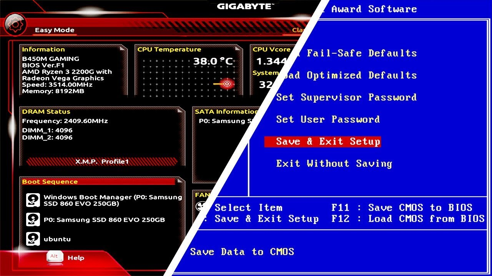
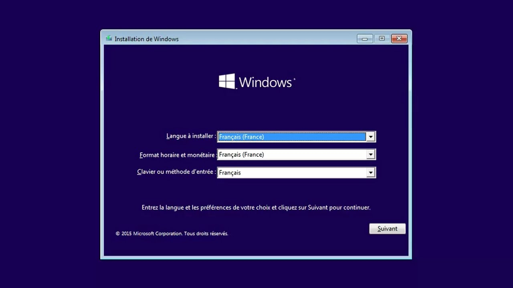
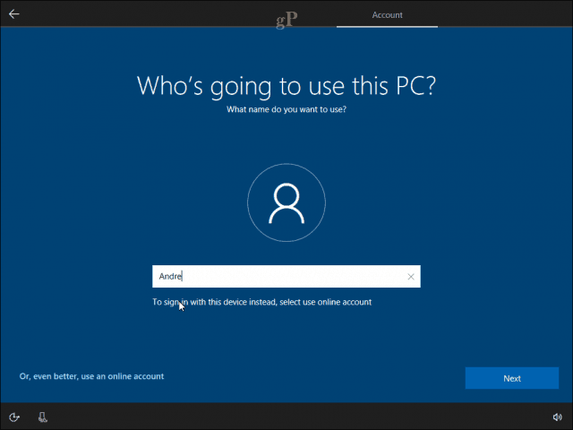
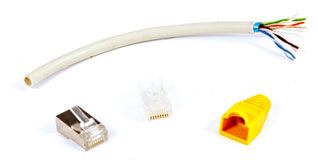
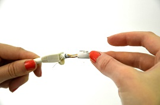
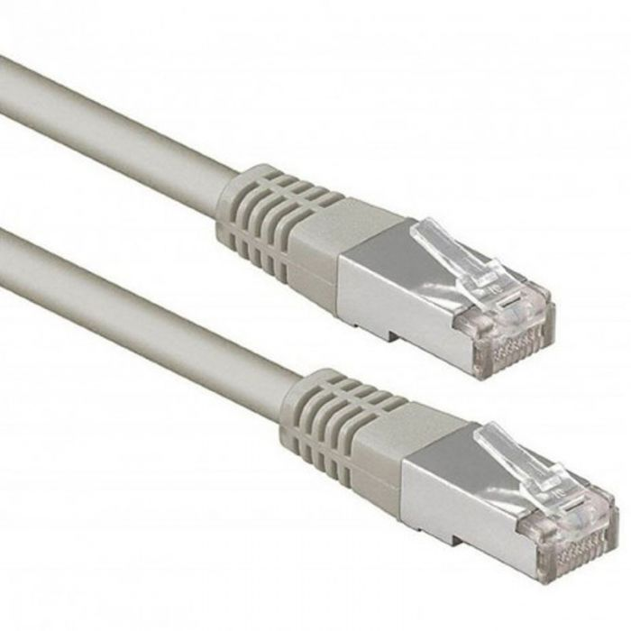

Les Etapes d'Installation de Windows 10
- Insérez la clé USB d'installation dans l'ordinateur que vous souhaitez installer Windows 10.
- Redémarrez l'ordinateur et entrez dans le menu de démarrage en appuyant sur la touche correspondante (F2, F10, F12, etc.) pour accéder au BIOS. 
- Dans le BIOS, accédez au menu de démarrage et sélectionnez la clé USB comme périphérique de démarrage principal et enregistrez les modifications et redémarrez l'ordinateur. Windows 10 va maintenant s'installer à partir de la clé USB.
- Suivez les instructions à l'écran pour configurer les paramètres de langue, de clavier, de fuseau horaire et de réseau.  
- Suivez les instructions à l'écran pour terminer l'installation de Windows 10. Une fois l'installation terminée, vous devrez configurer vos paramètres de compte utilisateur et personnaliser les paramètres de votre système.
Les Etapes d'Installation de IBM LOTUS NOTES
IBM Lotus Notes est un logiciel de messagerie et de collaboration en groupe développé par IBM pour aider les entreprises à communiquer et à collaborer efficacement.
- Téléchargez le programme d'installation de Lotus Notes à partir du site Web d'IBM.
- Suivez les instructions à l'écran pour accepter le contrat de licence et sélectionner les options d'installation souhaitées, telles que le répertoire d'installation et les fonctionnalités à installer.
- Sélectionnez le répertoire où vous souhaitez installer Lotus Notes et cliquez sur "Installer".
- Attendez que l'installation se termine. Cela peut prendre plusieurs minutes et une fois l'installation terminée, lancez Lotus Notes à partir du menu Démarrer ou du raccourci sur le bureau.

Les Etapes de Creation de cable RJ45
matériel necessaire
- Un cable Ethernet
- Deux connecteurs RJ45
- Une pince a sertir
- Un outil a dénuder
Les Etapes
- Dénuder le câble Ethernet sur environ 3 cm à l'une des extrémités à l'aide de l'outil à dénuder. 
- Trier les fils en suivant la norme T568B. Les fils doivent être disposés dans l'ordre suivant de gauche à droite : Blanc/Orange, Orange, Blanc/Vert, Bleu, Blanc/Bleu, Vert, Blanc/Brun, Brun.
- Insérer les fils dans le connecteur RJ45. Il est important que les fils soient insérés dans le bon ordre. Et s'assurer que les fils sont bien alignés et que les extrémités des fils atteiqgnent le fond du connecteur. 
- Utiliser la pince à sertir pour sertir le connecteur RJ45 sur le câble Ethernet. La pince doit être fermement serrée et maintenue en place pendant quelques secondes pour assurer une bonne connexion.
- Tester le câble pour s'assurer qu'il fonctionne correctement. 